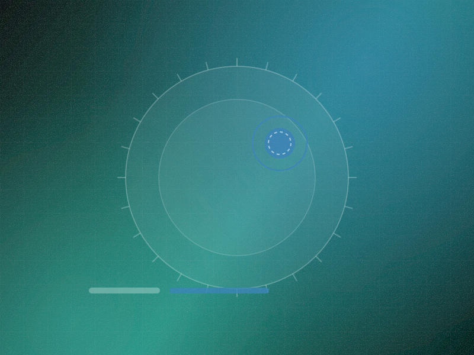

Medical image ingestion
DICOM ingestion from PACS with modality-aware preprocessing and study-level organisation.
From image finding to evidence-linked insight.
A clinician-facing decision support system that combines medical imaging, patient history and retrieved literature into findings a radiologist reviews, with the model positioned as a second reader rather than a decision maker.

01 · The problem
Imaging AI tends to fail in the same way. A model outputs a probability for a finding, the clinician has no way to interrogate it, and it becomes another number to either trust blindly or ignore entirely. Most are ignored.
The clinically useful work is not detection alone. It is relating a current finding to the patient's prior imaging, their history, and what the literature says about that combination, which is exactly the part that gets left to the clinician's memory at the end of a long list.
02 · What we did
We designed the system as a second reader that shows its working. Every finding comes with the region it rests on, the comparison against prior studies, the relevant history, and the literature that informs interpretation, all inspectable before the clinician forms a view.
The workflow is explicitly human-in-the-loop, and structurally so. The system cannot write to the report. It prepares, evidences and prioritises; a clinician reviews, accepts or rejects, and every one of those decisions is recorded with its rationale.
A probability without a reason is another number to ignore at the end of a long list.
Two of the screens that carry the most weight in daily use, rebuilt here from the production design system.
A second reader that shows its workingEvery finding opens onto the region it rests on, the prior comparison and the literature that informs interpretation.
Drift watched in serviceModel behaviour is compared continuously against clinician decisions, so degradation is detected rather than assumed away.
Grouped by the job each set of capabilities exists to do, rather than by which team built it.
DICOM ingestion from PACS with modality-aware preprocessing and study-level organisation.
Structures segmented so findings are described in anatomical terms rather than pixel coordinates.
Candidate findings localised with the supporting region highlighted for direct inspection.
Confidence expressed against measured operating characteristics rather than a raw model score.
Current study compared against the patient's own prior imaging with change quantified and shown.
Relevant history, medications and prior results surfaced alongside the finding they bear on.
Passages retrieved from trusted sources for the specific finding and patient context, always cited.
Considerations presented as a structured set with the evidence for each, not a ranked verdict.
Every finding requires explicit acceptance or rejection. Nothing propagates unreviewed.
Studies ordered by finding urgency so time-critical cases reach a reader sooner.
Every model output, clinician decision and rationale recorded immutably.
Live tracking of model behaviour against clinician decisions to detect drift in service.
Layer by layer, with the reason each one exists, because the reason is usually the interesting part.
Standards-based DICOM integration with the imaging estate, operating alongside existing workflow rather than replacing it.
Segmentation and detection per modality and body region with calibrated confidence outputs.
Registration of current against prior studies with quantified interval change.
Retrieval over curated clinical literature scoped to finding and patient context, with citation enforced.
Reading workspace with region overlay, prior comparison, evidence panel and the decision audit trail.
Technology
Measured against how the operation ran before, not against a benchmark chosen after the fact.
The model is inspectable. Every finding opens onto the region, the prior comparison and the literature behind it.
Prior studies are always in view. Interval change is computed rather than left to recall.
The clinician remains the decision maker. The system cannot write to the report, by construction.
Drift is monitored in service. Model behaviour is continuously compared against clinician decisions.
How it ran
Defined the intended use, the second-reader boundary and the evaluation protocol with the clinical team.
PACS and record integration built to standards so the system sits inside existing workflow.
Segmentation, detection, calibration and prior-study registration.
Literature retrieval with citation gating and the clinician review workspace.
Shadow-mode operation with performance monitored against clinician decisions.
From defect detection to defect causality.
A multimodal system that correlates line video, machine telemetry, batch records and operator actions to explain why a defect happened, not merely that it did..
Not alarm detection. Failure hypothesis reduction.
A correlation engine that turns an alarm storm into a short ranked list of probable root causes by reasoning over network topology and fault propagation rather than alarm counts..
From a single inspection to longitudinal asset integrity.
A vision system that detects and localises pipeline deterioration, then tracks each defect across inspection cycles so maintenance is prioritised by progression rather than by appearance..
Tell us what you run. We will reply within two business days with what we would build for your situation and, just as usefully, what we would leave out.